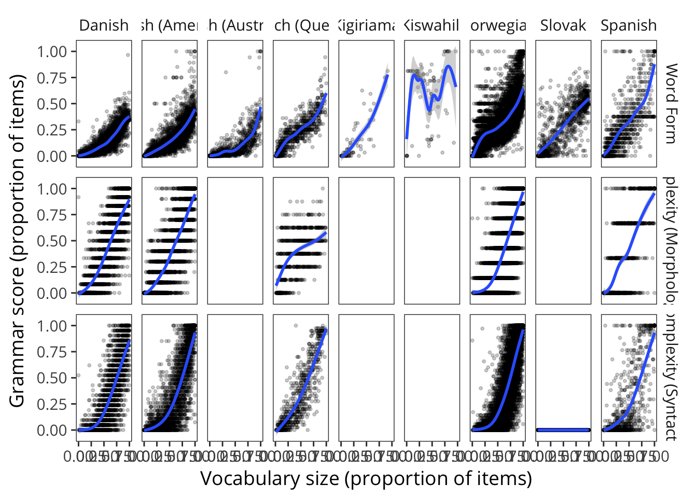
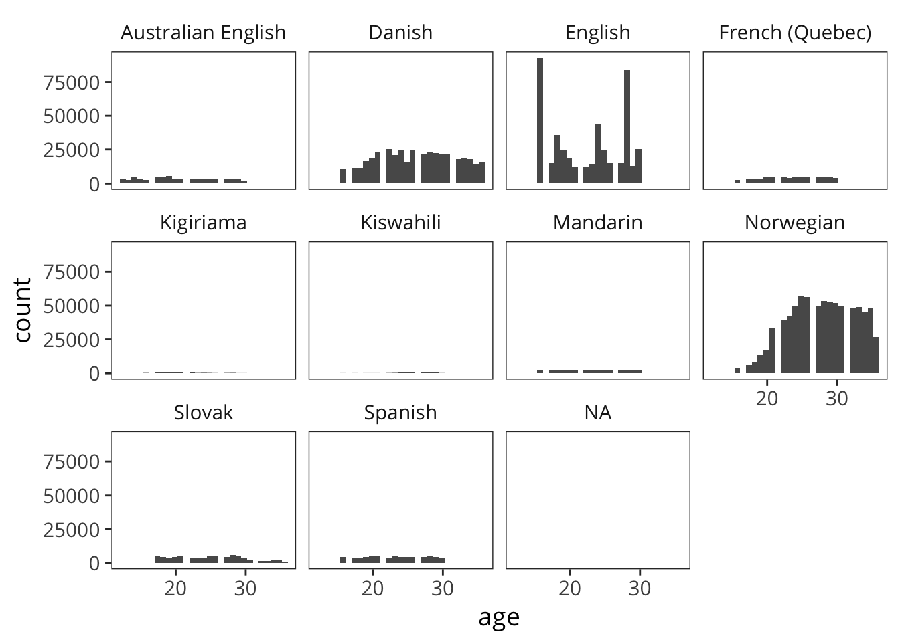
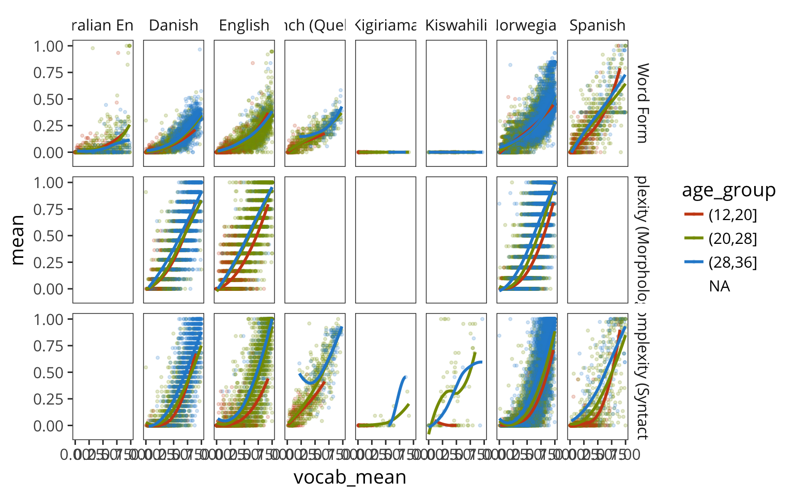

7 The Growth of Grammar
7.1 Abstract
How does abstract structure emerge during language learning? On some accounts, children’s early syntax emerges from direct generalizations from particular lexical items, while on others, syntactic structure is acquired independently and follows its own timetable. Progress on differentiating these views requires detailed developmental data. Using parent reports of vocabulary and grammar abilities, previous analyses have shown that early syntactic abstraction strongly depends on the growth of the lexicon, providing support for lexicalist and emergentist theories. Using a large crosslinguistic database in four languages, we replicate and extend these findings, demonstrating similar patterns in each language. At the same time, the power of our dataset reveals measurable effects of age over and above those attributable to vocabulary size, and that these effects are greater for aspects of language ability more closely tied to syntax. These findings suggest non-lexical contributions to the growth of syntactic abstraction that all theories must address.
7.2 Introduction
A child as young as two or three (who happens to be acquiring English) can hear someone say Alice glipped the blicket and draw a wealth of inferences from the morphological and syntactic structure of that utterance: that Alice and blicket are entities in the world and glipping is an action; that Alice is the one glipping and the blicket is the thing being glipped; that glipping occurred in the past (rather than the present, as in Alice is glipping the blicket); that a single blicket was involved (rather than multiple, as in Alice glipped the blickets). What mechanisms underlie the formation of generalizations that support such inferences? Does an understanding of the abstract structure of language emerge from the interactions of individual words, or is structure acquired and represented separately?
On nativist theories like principles and parameters (Chomsky 1981; ???), grammar emerges independently from lexical knowledge following its own, largely maturational, timetable. According to lexicalist theories, in contrast, morphosyntactic structure emerges from graded generalizations on the basis of lexical items, and at least early in development, there may be little or no representation of morphosyntactic rules or regularities per se (Tomasello 2003). Even when syntactic structures are eventually represented, these representations are directly related to more concrete lexical structure (Bannard, Lieven, and Tomasello 2009). Therefore, grammatical development should be tightly yoked to lexical development (Bates and Goodman 1999). Data on the relationship between the lexicon, grammar, and age are important for informing this fundamental theoretical debate.
One source of such data is the MacArthur-Bates Communicative Development Inventory (CDI), a widely-used assessment tool in which parents report which words their child produces on a checklist organized by lexical-semantic categories. Children’s vocabulary size can thus be estimated over the entire checklist, or for sub-categories. The CDI also provides indices of grammar learning by asking about children’s use of inflected forms (e.g., walked) and the complexity of their word combinations (e.g., kitty sleeping / kitty is sleeping). Influential early findings using this measure showed that early vocabularies tend to be composed primarily of nouns, while verbs and closed-class forms, which might support the transition into complex sentences, are typically acquired later (E. Bates et al. 1994). Further, across different populations and languages, global estimates of grammatical development were more strongly predicted by overall vocabulary size than by age, providing support for lexicalist theories (see Bates and Goodman 1999 for a review).
7.3 Methods
In all four languages, the CDI forms contain both vocabulary checklists and other questions relevant to the child’s linguistic development. All of the data reported here come from the Words & Sentences form, administered to children ages 16–32 months. Each of these instruments includes a Vocabulary section, which asks whether the child produces each of around 700 words from a variety of semantic and syntactic categories (e.g., , , ); a Word Form section, which asks whether the child produces each of around 30 morphologically inflected forms of nouns and verbs (e.g., , ); and a Complexity section, which asks whether the child’s speech is most similar to the syntactically simpler or more complex versions of around 40 sentences (e.g., , ). Each language’s instrument is not just a translation of the English form, but rather was constructed and normed to reflect the lexicon and grammar of that language.
To analyze lexical and grammatical development, we derive several measures. Each child’s Vocabulary Size is computed as the proportion of words on the corresponding CDI form that the child is reported to produce. Similarly, each child’s Word Form score is the proportion of word forms they are reported to produce, and their Complexity score the proportion of complexity items for which they are reported to use the more complex form. We compute all of these quantities as proportions to make the scales comparable across languages.
Show number of items in each relevant section.(#fig:7_n_items)Number of items in the words, word forms, and complexity sections for all those instruments with complexity items.
Some utility functions for transforming data values. Note the hack of thinking of everything that’s not complexity as being word form. Also - some complexity categories are not coded.
7.4 Grammar and the lexicon
Get kid by item data for wordform and complexity items all languages and aggregate them.
Get by kid summary data for all languages.
Plot score as a function of vocabulary size for each language and measure with model prediction curves.
Note that cubic clms don’t work that well here.

7.5 Grammar, development, and the lexicon
We explore a hypothesis that was not explicitly tested in these earlier studies: that there remains age-related variance in grammatical development unexplained by vocabulary development. While the overall relationship between grammar and the lexicon provides support for lexicalist theories, the identification of age-related variance would suggest the presence of developmental processes that regulate grammar learning, above and beyond those captured by measures of vocabulary size. Such age-related processes could be either maturational or experiential, and either domain-general (like working memory) or language-specific (like grammatical competency). Importantly, since both nativist and constructivist theories could in principle predict age-linked variance in grammatical development, our goal in the current work is not to differentiate these theories, but instead to test this novel prediction and explore its implications for future work on understanding the processes of grammatical development.
An additional contribution of work is that, due to the size of our dataset, we are able to make more fine-grained distinctions than the initial cut between grammar and the lexicon. In particular, we distinguish morphology from multi-word syntax, since morphological generalizations might be more specifically dependent on vocabulary size than those requiring more global, sentence-level syntactic regularities. Similarly, we distinguish age-related contributions to different parts of the vocabulary. Lexical items like verbs and even more so function words require some syntactic information to learn (Gleitman 1990) and hence might be more linked to age-related factors that extend beyond vocabulary size.
By two years, most children have a sizable working vocabulary, including verbs, prepositions, and closed class forms that perform grammatical work. They are also beginning to use multi-word combinations (e.g., ) and may demonstrate productive use of inflectional morphemes (e.g., past tense ). Previous studies have found a strong connection between the size of the lexicon and grammatical development as measured by the Complexity section, in many languages including English, Italian, Hebrew, and Spanish
This suggests that the mechanisms guiding vocabulary and grammar learning are highly interdependent (Tomasello 2003; Bresnan 2001), a view at odds with the nativist assumption that grammar emerges independent of the lexicon (Chomsky 1981).
We wanted to estimate how much variance in children’s syntactic and morphological development remains after accounting for that child’s vocabulary size. Specifically, we asked whether age provides additional predictive power beyond vocabulary size. To estimate this effect, we fit logistic regression models to each child’s Word Form and Complexity scores, predicting score as a function of vocabulary size and age in months. For all languages and measures, the evidence is overwhelmingly in favor of the model using both vocabulary and age as predictors, as compared to the model using only vocabulary (the smallest difference in AIC is 76). %Main effects were always exceedingly reliable, but the interaction term had negligible magnitude and so we omit it here.
Figure~ shows data and models: each dot represents a child’s score on a measure, while curves show the relationship between score and vocabulary size. %As seen most clearly for English and Norwegian—the languages for which we have most data— For all languages, the curves for Word Form are near-overlapping, showing little differentiation across age groups. This indicates only small contributions of age above and beyond vocabulary. In contrast, the curves for Complexity show a characteristic fan across age groups, indicating that the relationship between vocabulary size and complexity score is modulated by age. %The Spanish and Danish data show less of a clear complexity curve fan, possibly because of the relatively small number of data points in the youngest age group.

Choosing cut points here is hard, since the age distribution/density is different from language to language.

UNUSED MODEL BASED ANALYSES BELOW
Plot age effect coefficients for each language and measure.
Fit models for each wordform and complexity item and get their age coefficients.
Function for plotting age effect coefficients by item for a language.
Plot item interactions for Norwegian.
Plot item interactions for English.
Plot item interactions for Danish.
Plot item interactions for Spanish.
Because of the size of our samples, all main effects and interactions are highly significant. To assess the extent of the age contribution to children’s morphological and syntactic development, we compared the coefficients of Word Form and Complexity models. Figure~ shows the coefficient of the age effect for each measure across languages. In each language, the age effect coefficient is substantially larger for Complexity than Word Form, indicating a greater age effect on those items that generally align with syntax than morphology.
Given the heterogeneous nature of the CDI instruments, particularly in the Complexity sections, we further broke down these items by classifying them as capturing more morphological or more syntactic phenomena. Items for which the difference between the simple and complex sentences is in the inflection of a noun or verb (such as ) were coded as Morphological. The remainder of the items were coded as Syntactic, since they involve the use of some sentence-level syntactic construction (such as ).
We then fit predictive models as above separately for every item. Figure shows the age effect coefficient of each item. In general, there is a three-way split: age effects are smallest for Word Form items, then Morphological Complexity items, and largest for Syntactic Complexity items, suggesting more syntactic phenomena have greater age contributions.
Building on previous analyses that showed a strong relationship between lexical and grammatical development, we added age into this relationship. Across languages, our measures of syntactic development consistently showed greater age modulation than measures of morphological development. Further distinguishing between items that were more reflective of morphology than syntax, we again found greater age effects for more syntactic items. Thus, this analysis provides evidence for a relationship between syntactic development and age captured by lexical development.
7.6 Discussion
The current study revisits classic findings but also explores novel questions regarding lexicon-grammar relations and vocabulary composition through Wordbank, a newly-developed web-based tool for cross-linguistic analyses of large CDI datasets. Our results provided general support for a lexicalist view, in that, in four languages, variance in vocabulary production strongly aligned with variance in grammar. However, we also estimated additional age-related contributions, specifically contrasting the links to morphological forms vs. syntactic constructions, and for different lexical categories. In general, we find that measures of grammar that are more closely aligned with syntax are modulated by age to a greater extent than those reflecting inflectional morphology. Also, we find that the trajectories of predicate and function word representation in the vocabulary are modulated by age to a greater extent than noun representation (albeit with some variability across languages). Both findings suggest a place for developmental processes that facilitate grammatical acquisition beyond pure lexical growth.
Our analyses suggest interesting new areas of research regarding possible mechanisms driving children’s early lexical development and how those mechanisms might support children’s transition from single words to more morphosyntactically complex utterances. One possibility is that these developments are dependent on maturational factors that operate on grammatical development in a domain-specific way, independent of lexical-semantic processes. Another possibility is that age-related effects represent more domain-general learning mechanisms, such as attention or working memory, that provide differential support for sentence-level processes than word-internal ones . Future studies should also explore the extent to which lexical and age-related processes are shaped, either independently or in tandem, by features of the learning environments that children experience <e.g.,>{weisleder2013}.
Questions about the nature of morphosyntactic representations in early language have often seemed deadlocked. But by mapping out developmental change across large samples and multiple languages, our findings here challenge theories across the full range of perspectives to more fully describe the mechanistic factors underlying the interaction of vocabulary, grammar, and development.
Show these same models broken down by age.
Fit grammar score models and use them to predict data.
P
Model comparison: fit grammar models and get their AICs and age coefficients.
Show AICs of grammar models.